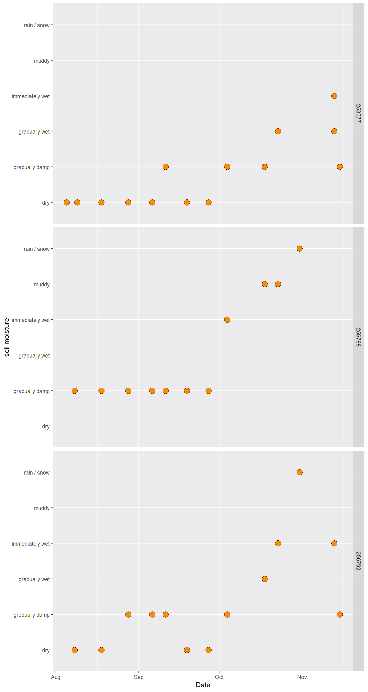
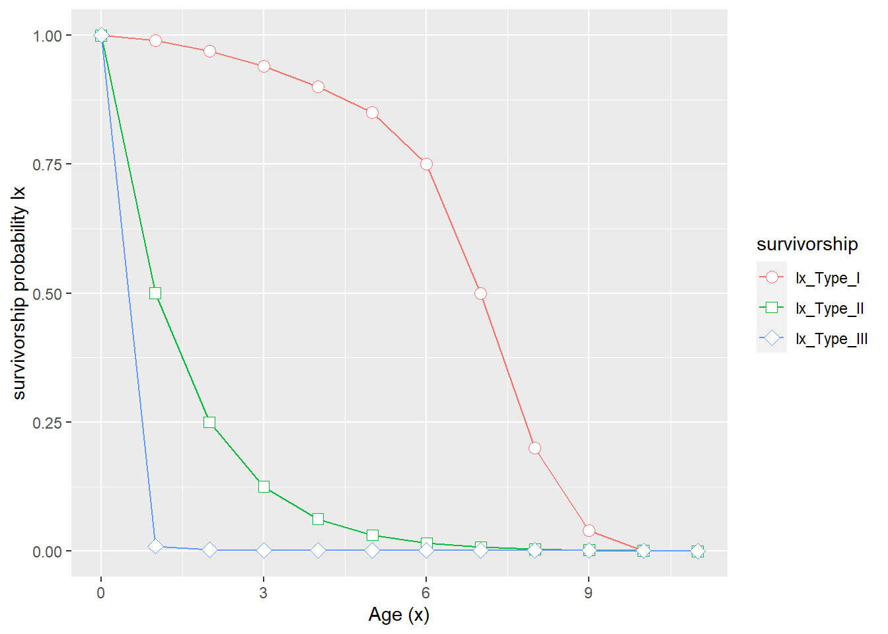

6 Island Biogeography
Date: 9/2/2020
Download the project folder here.
Learning Objectives
After completing this lab you should
- understand the difference between a
tidy(long) andwideformatted data set. - be able to create a simple scatterplot using
ggplot. - understand the relationship of immigration rates, extinction rates, and species richness to the area and distance to mainland of an island.
- understand the concept of a dynamic equilibrium.
- understand how habitats may differ in their productivity whic can affect the number of species (individuals) they can sustain.
6.1 Background
The field of biogeography focuses on the geographic distribution of species and ecosystems and the factors contributing to differences in distribution, understanding patterns (and changes to those patterns) of species distributions is an important component of conservation biology.
Islands are frequently characterized by higher rates of extinction compared to other areas, this can be attributed to the fact that compared to counterparts on the mainland they generally have smaller populations and lower genetic diversity (Frankham 1997)1 We will focus more on this aspect during and Conservation Genetics Unit.. Further, anthropogenic effects such as habitat degradation and fragmentation (e.g. development of resort), introduced species and other drivers of biodiversity loss such as direct and indirect impacts of climate change (e.g. increasing number and severity of storms), invasive species, disease makes them some of the most threatened habitats.
The equilibrium theory of island biogeography (MacArthur and Wilson 1963) is a model that predicts community diversity on islands at equilibrium based on the immigration/colonization rate from the mainland to the islands and the extinction rate on the island. The probability of colonization of an island is a function of the distance of the island from the mainland (closer, more likely), the island’s species richness (less species, more likely). Though species richness also plays a role in determining the extinction rate, by contrast, the extinction rate is in large part determined by the island size (smaller island, less resources available).
In an effort to test MacArthur & Wilson’s model, in the 1960s small mangrove islands in southern Florida were first fumigated to remove all arthropods2 Try getting permits for an experiment like that today! and then the change in diversity over time was modeled (Simberloff and Wilson 1969) which corresponded to the predicted patterns remarkably well.
Biodiversity can also be limited by the productivity of an ecosystem. The primary production can be measured as the amount of energy fixed (captured) by primary producers through photosynthesis - this determines the amount of energy available to an ecosystem because it determine the amount of energy available at other levels of the ecosystem. In large part, primary production depends on the amount of sunlight available but also other important climate predictors such as temperature and precipitation. In general, more productive habitats are expected to support higher species richness.
6.2 Comparison of Species Richness among two islands
Let’s compare the species richness on two islands.
Shannon Rock is located 110km from the mainland and has a diameter of 128km, the Isle of Leary is 70km from the mainland and has a diameter of 256 km. Both islands feature five different habitats and I recorded the number of individuals of each species present for four taxonomic groups3 10 species per taxonomic group possible..
Let’s load that data set:
# read data
raw_counts <- read_delim("data/model_output.txt", delim = "\t") %>%
filter(EXPERIMENT == "diversity") %>%
select(-EXPERIMENT)## Parsed with column specification:
## cols(
## EXPERIMENT = col_character(),
## ISLAND = col_character(),
## SPECIES = col_character(),
## COUNT = col_double(),
## RUN_TIME = col_double(),
## HABITAT = col_character(),
## DISTANCE = col_double(),
## SIZE = col_double(),
## TAXON = col_character(),
## MIGRAT_RATE = col_double(),
## MORTALITY = col_double()
## )## # A tibble: 400 x 10
## ISLAND SPECIES COUNT RUN_TIME HABITAT DISTANCE SIZE TAXON MIGRAT_RATE
## <chr> <chr> <dbl> <dbl> <chr> <dbl> <dbl> <chr> <dbl>
## 1 Shann~ sp01 0 200 tropic~ 110 128 Arth~ 2
## 2 Shann~ sp02 2 200 tropic~ 110 128 Arth~ 2
## 3 Shann~ sp03 0 200 tropic~ 110 128 Arth~ 2
## 4 Shann~ sp04 0 200 tropic~ 110 128 Arth~ 2
## 5 Shann~ sp05 0 200 tropic~ 110 128 Arth~ 2
## 6 Shann~ sp06 0 200 tropic~ 110 128 Arth~ 2
## 7 Shann~ sp07 0 200 tropic~ 110 128 Arth~ 2
## 8 Shann~ sp08 1 200 tropic~ 110 128 Arth~ 2
## 9 Shann~ sp09 0 200 tropic~ 110 128 Arth~ 2
## 10 Shann~ sp10 1 200 tropic~ 110 128 Arth~ 2
## # ... with 390 more rows, and 1 more variable: MORTALITY <dbl>It consists of 10 variables and 400 observations. This is what we call a tidy (or long) data set4 See Hadley Wickham’s paper for a detailed description on the concept.. Each row is a single observation. It does make for a very long dataframe but it has several benefits for processing and visualizing data sets.
A data set in this format is centered around the concept that all the information is in a single dataframe with sets of key-value pairs. For example, in this data frame SPECIES would be the key, and COUNT the values, i.e. the unit of analysis is SPECIES the measurement we are making is COUNT (number of individuals for each species)5 You can have multiple keys for example here, all the parameters set in the model together with the each ISLAND and SPECIES could form a key - this should remind you of our use of the the group_by function to create groups within a data set based on shared values for a parameter..
To demonstrate the difference select the columns ISLAND, SPECIES and COUNT, and retain only the counts for Arthropods in the tropical habitat.
► Question 6.1
What functions and arguments would you use to accomplish this?
► Solution
Now we can turn that into the wide format using pivot_wider(). Specify the key using names_from (these will become the columns) and the values using values_from.
## # A tibble: 2 x 11
## ISLAND sp01 sp02 sp03 sp04 sp05 sp06 sp07 sp08 sp09 sp10
## <chr> <dbl> <dbl> <dbl> <dbl> <dbl> <dbl> <dbl> <dbl> <dbl> <dbl>
## 1 Shannon Rock 0 2 0 0 0 0 0 1 0 1
## 2 Isle of Leary 1 3 1 3 2 5 0 1 3 2This format is probably a little more familiar (and legible) to you - but unless you add a descriptive title and description somebody else would not immediately be able to get all the information about what habitat and what taxonomic group you are presenting. You would either have to create a series of tables, one for each habitat/taxon combination, or you could create one giant wide table where you would have columns in the format of habitat-taxon-spX.
Sometimes you will have a data set in the wide format and will need to create a tidy data set from that. Fortunately, we have a function pivote_longer() that will do exactly that. Specify the columns that you will gather using cols and then name your column with the key values (names_to) and the columns that will hold your values (values_to).
## # A tibble: 20 x 3
## ISLAND SPECIES COUNT
## <chr> <chr> <dbl>
## 1 Shannon Rock sp01 0
## 2 Shannon Rock sp02 2
## 3 Shannon Rock sp03 0
## 4 Shannon Rock sp04 0
## 5 Shannon Rock sp05 0
## 6 Shannon Rock sp06 0
## 7 Shannon Rock sp07 0
## 8 Shannon Rock sp08 1
## 9 Shannon Rock sp09 0
## 10 Shannon Rock sp10 1
## 11 Isle of Leary sp01 1
## 12 Isle of Leary sp02 3
## 13 Isle of Leary sp03 1
## 14 Isle of Leary sp04 3
## 15 Isle of Leary sp05 2
## 16 Isle of Leary sp06 5
## 17 Isle of Leary sp07 0
## 18 Isle of Leary sp08 1
## 19 Isle of Leary sp09 3
## 20 Isle of Leary sp10 2To further demonstrate the benefits of a tidy data set, let’s calculate species richness to compare the biodiversity found on each of the islands.
► Question 6.2
Give a brief definition of species richness and point out the limitations of using it as a measure of species diversity.
► Question 6.3
What dplyr verbs can you use to quickly calculate the number of observed species per island for each taxonomic group in each habitat?
► Solution
Here is another benefit of using the tidy format - you can easily create tables to answer specific questions. For example, if you were mainly interested in difference of species richness among habitat types you could pivoting the table into a wide table by first grouping observations by ISLAND and TAXON and then using HABITATas your key, and n as your values.
richn %>%
group_by(ISLAND, TAXON) %>%
pivot_wider(names_from = HABITAT, values_from = richn) %>%
arrange(TAXON)## # A tibble: 8 x 7
## # Groups: ISLAND, TAXON [8]
## ISLAND TAXON desert subtropical temperate tropical tundra
## <chr> <chr> <int> <int> <int> <int> <int>
## 1 Isle of Leary Arthropods 9 9 7 9 8
## 2 Shannon Rock Arthropods 3 6 5 3 2
## 3 Isle of Leary Birds 8 8 8 7 7
## 4 Shannon Rock Birds 2 3 2 5 1
## 5 Isle of Leary Mammals 7 8 9 8 7
## 6 Shannon Rock Mammals 4 2 4 7 3
## 7 Isle of Leary Reptiles 7 8 9 8 6
## 8 Shannon Rock Reptiles 2 3 7 3 5Or, if you more interested in a comparison of species richness among taxa you could do the following:
richn %>%
group_by(ISLAND, HABITAT) %>%
pivot_wider(names_from = TAXON, values_from = richn) %>%
arrange(HABITAT)## # A tibble: 10 x 6
## # Groups: ISLAND, HABITAT [10]
## ISLAND HABITAT Arthropods Birds Mammals Reptiles
## <chr> <chr> <int> <int> <int> <int>
## 1 Isle of Leary desert 9 8 7 7
## 2 Shannon Rock desert 3 2 4 2
## 3 Isle of Leary subtropical 9 8 8 8
## 4 Shannon Rock subtropical 6 3 2 3
## 5 Isle of Leary temperate 7 8 9 9
## 6 Shannon Rock temperate 5 2 4 7
## 7 Isle of Leary tropical 9 7 8 8
## 8 Shannon Rock tropical 3 5 7 3
## 9 Isle of Leary tundra 8 7 7 6
## 10 Shannon Rock tundra 2 1 3 5While tables can efficiently summarize data it is frequently difficult to compare values in a straightforward way. Instead visualizing the differences using a simple plot may be more helpful.
You can plot pretty much any plot you can dream up7 and several you haven’t even thought of! using ggplot which is based on the same principles as other packages in the tidyverse.
Let’s start with something simple. We will first plot the species richness for a single habitat.
desert <- richn %>%
filter(HABITAT == "desert")
ggplot(desert, aes(x = TAXON, y = richn, fill = ISLAND)) +
geom_point(shape = 21, size = 3)Figure 6.1: Species Richness per taxon for desert habitats on the Isle of Leary (red?) and Shannon Rock (blue?)
Let’s break down what this code is doing.
- Each line of code is connected to the next using
+^[The+is used the same way we use the%>%pipe to string together commands) telling the function “and now add this to the plot”. -
ggplot(desert, aes(x = TAXON, y = n, fill = ISLAND)): this specifies the data frame to plot (desert) and theaes()(aesthetics) tells the function what you want plotted on thexandyaxis. You are also telling it that you want to color code your points based on the contents of the columnISLAND. -
geom_point(shape = 21, size = 3)- now you are telling the function what type of plot you want - points (scatterplot). You are also specifying the type of point and how large you want it to be.
Not too shabby - but we can add a few lines to customize (and improve) our plot:
ggplot(desert, aes(x = TAXON, y = richn, fill = ISLAND)) +
geom_point(shape = 21, size = 3) +
# specify the colors to use for fill
scale_fill_manual(values = cols) +
# make sure the breaks are at whole numbers and scale goes from 0 to 10
scale_y_continuous(breaks = pretty_breaks(), limits = c(0, 10)) +
# specify the axis titles
labs(x = "taxonomic group", y = "species richness") +
# customize the theme
theme_standard +
# turn x-axis labels 90 degrees
theme(axis.text.x = element_text(angle = 90, vjust = 0.5, hjust=1))Figure 6.2: Species Richness per taxon for desert habitats on the Isle of Leary (grey) and Shannon Rock (orange)

Now, what if we wanted to create a plot for each habitat?
Being able to quickly create facetted plots is another benefit of keeping your data in the tidy format. You can use facet_wrap() which allows you to specify a column to say “split the data set into groups according to this column” to create a set of individual plots.
ggplot(richn, aes(x = TAXON, y = richn, fill = ISLAND)) +
geom_point(shape = 21, size = 3) +
facet_wrap(~ HABITAT) +
scale_fill_manual(values = cols) +
scale_y_continuous(breaks = pretty_breaks(), limits = c(0, 10)) +
labs(x = "taxonomic group", y = "species richness") +
theme_facet +
theme(axis.text.x = element_text(angle = 90, vjust = 0.5, hjust=1))Figure 6.3: Species Richness per taxon and habitat
► Question 6.4
What if you were more interested in comparing how species richness compared across habitats for each taxonomic groups? Can you think of a straightforward way to re-plot your data?
► Solution

Now we are getting somewhere. Now that we’ve played with the data, let’s actually take a look and what patterns we can observe in the data.
► Question 6.5
Take a look at the two faceted plots and record your observations. Consider patterns patterns between the two islands, across taxonmic groups and among habitats.
Hint
► Question 6.6
Both islands have the same set of habitats available and species colonizing the islands come from the same mainland pool. What two key parameters distinguish the islands? Formulate a hypothesis for each parameter as to how it could be causing the observed pattern, the argue why you would expect this effect.
Hint
6.3 Design your experiment(s)
6.3.1 The model
In this lab we will use a computer simulation to generate data sets to explore the fundamental principles of Island Biogeography.
Open the using this link.
On the right hand you can see the modeled “world” consisting of the mainland and two islands. You will also see various species (different colors) moving around.
On the left, you should see a notebook describing the parameters that can be specified for the model these include
- Habitat (categorical): Tropical, Subtropical, Temperate, Tundra, and Desert
- Island Distance (numerical): ranging from 10 to 410 in increments of 20.
- Island Diameter (numerical): ranging from 64 - 256 in increments of 32.
- Taxon (categorical): Arthropods, Birds, Reptiles, Mammals
- Migration Rate (numerical): ranging from 0 - 10, increments of 1.
- Mortality (numerical): ranging from 0.01 - 0.11, increments of 0.11.
Categorical values are manipulated by selecting a category, numerical values are increased/decreased using the blue arrows.
On the bottom of the notebook, you will see three round blue buttons that control the speed of the model (white box) using the << and >> buttons and you can start and stop the model using the middle button.
In the bottom right corner of the notebook there is an arrow taking you to the “next page” which is recording the data of the model in real time. Click the arrow to check out the data sheet.
The Data Collection section consists of a dynamic table that is recording the number of individuals for each of the ten species found on the mainland that are currently found on each of the islands.
On the bottom left you can see two panels with dynamic histograms indicating the current and average number of species on the island. To the right is a table with the values being displayed in the histogram.
Above the arrow that would take you back to the Design page you see the Run Time, above that the option to Reset the Average and Clear Islands.
► Question 6.7
Briefly explain how you will design your experiment to test whether distance or area are causing the observed differences in species richness.
6.3.2 Run the model & collect your data
Use the provided template to record your parameter settings and the habitat and taxonomic group you will be observing. For your experiment testing the effect of distance put “distance” in the EXPERIMENT column, for testing the effect of area, “area”. Remember this is in the format of a tidy data set so all your observations for each run time and both experiments will be in consecutive rows.
Run the model and at each time step record the observed number of individuals for each species. When you are finished export your results as a tab-delimited file for analysis and place it in the data directory.
Be sure to upload your data to the google spreadsheet for a later comparison of different patterns among habitats/taxonomic groups!
6.3.3 Compare results
DISTANCE
Load your results8 make sure to replace the file path with your file name.
# read data
distance <- read_delim("data/tundra_arthropods.txt", delim = "\t") %>%
filter(EXPERIMENT == "distance")## Parsed with column specification:
## cols(
## EXPERIMENT = col_character(),
## ISLAND = col_character(),
## SPECIES = col_character(),
## COUNT = col_double(),
## RUN_TIME = col_double(),
## HABITAT = col_character(),
## DISTANCE = col_double(),
## SIZE = col_double(),
## TAXON = col_character(),
## MIGRAT_RATE = col_double(),
## MORTALITY = col_double()
## )Let’s compare the change in species composition over time9 Make sure to change the title to reflect the habitat/taxon group you are comparing.
ggplot(distance, aes(x = RUN_TIME, y = COUNT, color = SPECIES)) +
geom_line(size = 1) +
geom_point(shape = 21, size = 3, fill = "white") +
facet_grid(SPECIES ~ ISLAND) +
scale_color_manual(values = cols) +
scale_y_continuous(breaks = pretty_breaks(), limits = c(0, 10)) +
labs(x = "time", y = "number of individuals",
title = "Arthropods in the the Tundra") +
theme_facet +
theme(axis.text.x = element_text(angle = 90, vjust = 0.5, hjust=1))Figure 6.5: Number of individuals sampled for each species at each sampling point.

► Question 6.8
Describe your results.
Calculate species richness observed for each sampling point and plot the change over time.
# calculate
richn <- distance %>%
filter(COUNT > 0) %>%
group_by(ISLAND, RUN_TIME, DISTANCE, SIZE, MIGRAT_RATE, MORTALITY) %>%
summarize(sp_richn = n())## `summarise()` regrouping output by 'ISLAND', 'RUN_TIME', 'DISTANCE', 'SIZE', 'MIGRAT_RATE' (override with `.groups` argument)ggplot(richn, aes(x = RUN_TIME, y = sp_richn, color = ISLAND)) +
geom_line(size = 1) +
geom_point(shape = 21, size = 3, fill = "white") +
scale_y_continuous(breaks = pretty_breaks(), limits = c(0, 10)) +
scale_x_continuous(breaks = pretty_breaks()) +
labs(x = "time", y = "species richness",
title = "Arthropods in the the Tundra") +
theme(axis.text.x = element_text(angle = 90, vjust = 0.5, hjust=1))Figure 6.6: Observed species richness at each sampling point.
► Question 6.9
Describe your results.
Calculate the total number of individuals observed for each sampling point and plot the change over time.
# calculate
total <- distance %>%
group_by(ISLAND, RUN_TIME, DISTANCE, SIZE, MIGRAT_RATE, MORTALITY) %>%
summarize(total_ind = sum(COUNT))## `summarise()` regrouping output by 'ISLAND', 'RUN_TIME', 'DISTANCE', 'SIZE', 'MIGRAT_RATE' (override with `.groups` argument)ggplot(total, aes(x = RUN_TIME, y = total_ind, color = ISLAND)) +
geom_line(size = 1) +
geom_point(shape = 21, size = 3, fill = "white") +
scale_y_continuous(breaks = pretty_breaks()) +
scale_x_continuous(breaks = pretty_breaks()) +
labs(x = "time", y = "total indv",
title = "Arthropods in the Tundra") +
theme(axis.text.x = element_text(angle = 90, vjust = 0.5, hjust=1))Figure 6.7: Observed total number of individuals across all species at each sampling point..
► Question 6.10
Describe your results.
ISLAND AREA
Load your results (make sure to replace with your file name).
# read data
area <- read_delim("data/tundra_arthropods.txt", delim = "\t") %>%
filter(EXPERIMENT == "area")## Parsed with column specification:
## cols(
## EXPERIMENT = col_character(),
## ISLAND = col_character(),
## SPECIES = col_character(),
## COUNT = col_double(),
## RUN_TIME = col_double(),
## HABITAT = col_character(),
## DISTANCE = col_double(),
## SIZE = col_double(),
## TAXON = col_character(),
## MIGRAT_RATE = col_double(),
## MORTALITY = col_double()
## )Let’s compare the change in species composition over time (make sure to change the title to reflect the habitat/taxon group you are comparing).
ggplot(area, aes(x = RUN_TIME, y = COUNT, color = SPECIES)) +
geom_line(size = 1) +
geom_point(shape = 21, size = 3, fill = "white") +
facet_grid(SPECIES ~ ISLAND) +
scale_color_manual(values = cols) +
scale_y_continuous(breaks = pretty_breaks(), limits = c(0, 10)) +
labs(x = "time", y = "number of individuals",
title = "Arthropods in the Tundra") +
theme_facet +
theme(axis.text.x = element_text(angle = 90, vjust = 0.5, hjust=1))Figure 6.8: Number of individuals sampled for each species at each sampling point.

► Question 6.11
Describe your results.
Calculate species richness observed for each sampling point and plot the change over time.
# calculate
richn <- area %>%
filter(COUNT > 0) %>%
group_by(ISLAND, RUN_TIME, DISTANCE, SIZE, MIGRAT_RATE, MORTALITY) %>%
summarize(sp_richn = n())## `summarise()` regrouping output by 'ISLAND', 'RUN_TIME', 'DISTANCE', 'SIZE', 'MIGRAT_RATE' (override with `.groups` argument)ggplot(richn, aes(x = RUN_TIME, y = sp_richn, color = ISLAND)) +
geom_line(size = 1) +
geom_point(shape = 21, size = 3, fill = "white") +
scale_y_continuous(breaks = pretty_breaks(), limits = c(0, 10)) +
scale_x_continuous(breaks = pretty_breaks()) +
labs(x = "time", y = "species richness",
title = "Arthropods in the Tundra") +
theme(axis.text.x = element_text(angle = 90, vjust = 0.5, hjust=1))Figure 6.9: Observed species richness at each sampling point.

► Question 6.12
Describe your results.
Calculate the total number of individuals observed for each sampling point and plot the change over time.
# calculate
total <- distance %>%
group_by(ISLAND, RUN_TIME, DISTANCE, SIZE, MIGRAT_RATE, MORTALITY) %>%
summarize(total_ind = sum(COUNT))## `summarise()` regrouping output by 'ISLAND', 'RUN_TIME', 'DISTANCE', 'SIZE', 'MIGRAT_RATE' (override with `.groups` argument)ggplot(total, aes(x = RUN_TIME, y = total_ind, color = ISLAND)) +
geom_line(size = 1) +
geom_point(shape = 21, size = 3, fill = "white") +
scale_y_continuous(breaks = pretty_breaks()) +
scale_x_continuous(breaks = pretty_breaks()) +
labs(x = "time", y = "total indv",
title = "Arthropods in the Tundra") +
theme(axis.text.x = element_text(angle = 90, vjust = 0.5, hjust=1))Figure 6.10: Observed total number of individuals across all species at each sampling point..
► Question 6.13
Describe your results.
6.4 The Equilibrium Theory of Island Biogeography
The equilibrium theory of island biogeography (MacArthur and Wilson 1963) states that patterns of species richness of an island are determined by two processes, Immigration (Colonization) and Extinction. If we can determine how these are related to distance and size of an island, we can infer how this affects species richness.
► Question 6.14
Assuming that species randomly migrate from the mainland to the island, briefly describe which factors determine the rate of immigration.
Hint
► Question 6.15
Assuming that species randomly migrate from the mainland to the island, briefly describe which factors determine the rate of extinction on the island.
Hint
Simple versions of this model do not consider more complex factors such as species interactions and differences among species in terms of migration/extinction probabilities; we are essentially assuming that species are ecologically equivalent.
► Question 6.16
We of course know that species are not ecologically equivalent. Describe a few examples of factors that could affect species richness other than distance and area.
Now that know what the factors are determine the immigration and extinction rates we should be able to generate a simple mathematical equation to quantify the rates.
\[I = \frac{c(P-S)}{fD}\]
The overall immigration rate \(I\) is inversely related to distance \(D\), i.e. the closer the island to the mainland the more likely a species will disperse to the island. The migration rate (colonization probability \(c\)), determine the probability that a species will disperse from the mainland pool of species (total number of species on mainland \(P\)) and increase the species richness \(S\) on the island, because as more species disperse the less likely it is that a species moving to the island does not already occur there. As a rule of thumb the scaling factor for Distance \(f\) can be assumed to be 0.01.
\[E = \frac{qS}{A^{m}}\]
The extinction rate \(E\) can be is inversely related to the area of the island \(A\) (we will assume a power scaling factor for the area \(m\) of 0.25). The extinction probability \(p\) will determine the decrease in species richness \(S\).
A key feature when considering that both processes are occurring simultaneously on the island is that as the species accumulate on the island (\(S\) increases), the immigration rate decreases, while the extinction rate increases. At some point the immigration rate and extinction rate will become equal, the species richness will have reached an equilibrium. This means that even though the composition of species is dynamic with new species immigrating to the island, this process is balanced by species on the island going extinct.
Because the composition of species but not the number of species changes it is called a dynamic equilibrium, the turnover rate \(T\) is determined as the rate of immigration (or extinction) at equilibrium, it is independent of the mainland pool size.
Having defined these relationships we can model the immigration rate and extinction rate as a function of species richness.
For this model we will first set values for our parameters and constants - usually you would need to infer those value from the literature or based on your data.
We are running what is called a for loop. Essentially we are running the same set of functions for a range of values (here distance). Instead of cutting and pasting the code multiple times and then adding those data frames together, we tell R to run the same set of functions for each value d in a given vector D that we have previously defined.
By using variables in our function and defining those separately instead of hardcoding the values in to the functions it is easy to change the actual values and re-run the code later on.
DISTANCE
## SET PARAMETERS ---
# number species mainland pool
P <- 1000
# colonization probability (assumed to be equal for all species)
c <- 0.1
# extinction probability (assumed to be equal for all species)
q <- 0.2
# power scaling factor for area
m <- 0.01
# scaling factor for distance
f <- 0.05
# Distance island-mainland
D <- c(100, 300, 600)
# area of the island
A <- 500
## CALCLATE RATES ---
# empty dataframe for results
model <- setNames(data.frame(matrix(ncol = 6, nrow = 0)),
c("fract_pool", "area", "distance", "richn", "parameter", "rate"))
# calculate species richness, immigration/extinction rate
for (d in D){
run <- as.data.frame(seq(from = 0, to = 1, by = 0.1)) %>%
rename(fract_pool = `seq(from = 0, to = 1, by = 0.1)`) %>%
mutate(area = A,
distance = d,
richn = P*fract_pool,
I = (c(P-richn))/(f*d),
E = q*richn/A^m) %>%
pivot_longer(cols = 5:6, names_to = "parameter", values_to = "rate")
model <- rbind(model, run)
}
# adjust labels for plotting
model <- model %>%
mutate(category = case_when(distance == 100 & parameter == "I" ~ "near",
distance == 300 & parameter == "I" ~ "medium",
distance == 600 & parameter == "I" ~ "far",
parameter == "E" ~ "all"),
category = ordered(category, levels = c("near", "medium", "far", "all")))
ggplot(model, aes(x = richn, y = rate, shape = parameter, color = category)) +
geom_line(size = 1) +
geom_point(size = 3, fill = "white") +
scale_color_manual(values = cols) +
scale_shape_manual(values = c(21, 22)) +
labs(x = "species richness", y = "immigration/extinction rate") +
theme_standard +
theme(legend.position = "right")Figure 6.11: Immigration/Extinction Rates and Island Distances
► Question 6.17
Briefly describe the relationship of immigration rate and species richness and the distance of the island to the mainland and identify the differences turnover rates (i.e. the level of species richness when extinction/immigration are in equilibrium) and explain how/why they differ in relation to each other.
AREA
## SET PARAMETERS ---
# number species mainland pool
P <- 1000
# colonization probability (assumed to be equal for all species)
c <- 0.1
# extinction probability
q <- 0.2
# power scaling factor for area
m <- 0.25
# scaling factor for distance
f <- 0.05
# Distance island-mainland
D <- 200
# area of the island
A <- c(50, 500, 5000)
## CALCLATE RATES
# empty dataframe for results
model <- setNames(data.frame(matrix(ncol = 6, nrow = 0)),
c("fract_pool", "area", "distance", "richn", "parameter", "rate"))
# calculate species richness, immigration/extinction rate
for(a in A){
run <- as.data.frame(seq(from = 0, to = 1, by = 0.1)) %>%
rename(fract_pool = `seq(from = 0, to = 1, by = 0.1)`) %>%
mutate(area = a,
distance = D,
richn = P*fract_pool,
I = (c(P-richn))/(f*D),
E = q*richn/a^m) %>%
pivot_longer(cols = 5:6, names_to = "parameter", values_to = "rate")
model <- rbind(model, run)
}
# adjust labels for plotting
model <- model %>%
mutate(category = case_when(area == 50 & parameter == "E" ~ "small",
area == 500 & parameter == "E" ~ "medium",
area == 5000 & parameter == "E" ~ "large",
parameter == "I" ~ "all"),
category = ordered(category, levels = c("small", "medium", "large", "all")))
ggplot(model, aes(x = richn, y = rate, shape = parameter, color = category)) +
geom_line(size = 1) +
geom_point(size = 3, fill = "white") +
scale_color_manual(values = cols) +
scale_shape_manual(values = c(21, 22)) +
labs(x = "species richness", y = "immigration/extinction rate") +
theme_standard +
theme(legend.position = "right")Figure 6.12: Immigration/Extinction Rates and Island Size
► Question 6.18
Briefly describe the relationship of immigration rate and species richness and the distance of the island to the mainland and identify the differences turnover rates (i.e. the level of species richness when extinction/immigration are in equilibrium) and explain how/why they differ in relation to each other.
Despite its simplicity, models based on our understanding of island biogeography are frequently used to predict the number of species expected to persist (or go extinct) in nature reserves.
6.5 Habitat & Taxonomic groups
You may remember from our initial comparison that we identified differences among habitats.
► Question 6.19
Take a look at the different habitats in the model and argue how you think they should rank in terms of the number of different species and total number of individuals they can support.
Hint
► Question 6.20
Take a look at the different taxonomic groups in the model and speculate why there may differences in the observed number of species/total individuals among different taxonomic groups.
Hint
► Question 6.21
Download the data from the spreadsheet we have combined all the different taxa/habitat scenarios and use the skills you’ve gained throughout this lab to compare the species richness grouped by taxon and habitat.
Notes
Load your results (make sure to replace with your file name). We will start with area - habitat will be a component to determine the extinction rate on the island; though of course differences in mortality at sea will still affect the signal because it will partially determine the immigration rate. Also, the effects of differences for large/small islands are much more apparent compared to near/far so it might be easier to discern a pattern.
## Parsed with column specification:
## cols(
## EXPERIMENT = col_character(),
## ISLAND = col_character(),
## SPECIES = col_character(),
## COUNT = col_double(),
## RUN_TIME = col_double(),
## HABITAT = col_character(),
## DISTANCE = col_double(),
## SIZE = col_double(),
## TAXON = col_character(),
## MIGRAT_RATE = col_double(),
## MORTALITY = col_double()
## )# double check that all the data points are there
# should have same number of lines per taxon/habitat combination
area %>%
group_by(TAXON, HABITAT) %>%
summarize(n = n())## `summarise()` regrouping output by 'TAXON' (override with `.groups` argument)## # A tibble: 10 x 3
## # Groups: TAXON [3]
## TAXON HABITAT n
## <chr> <chr> <int>
## 1 arthropods desert 120
## 2 arthropods subtropical 120
## 3 arthropods temperate 120
## 4 arthropods tropical 120
## 5 arthropods tundra 120
## 6 birds desert 120
## 7 birds subtropical 120
## 8 birds temperate 120
## 9 birds tropical 120
## 10 reptile tropical 120Calculate species richness observed for each sampling point and plot the change over time.
# calculate
richn <- area %>%
filter(COUNT > 0) %>%
group_by(ISLAND, RUN_TIME, DISTANCE, SIZE, TAXON, HABITAT, MIGRAT_RATE, MORTALITY) %>%
summarize(sp_richn = n())## `summarise()` regrouping output by 'ISLAND', 'RUN_TIME', 'DISTANCE', 'SIZE', 'TAXON', 'HABITAT', 'MIGRAT_RATE' (override with `.groups` argument)ggplot(richn, aes(x = RUN_TIME, y = sp_richn, color = ISLAND)) +
geom_line(size = 1) +
geom_point(shape = 21, size = 3, fill = "white") +
facet_grid(TAXON ~ HABITAT) +
scale_y_continuous(breaks = pretty_breaks(), limits = c(0, 10)) +
scale_x_continuous(breaks = pretty_breaks()) +
labs(x = "time", y = "species richness") +
theme(axis.text.x = element_text(angle = 90, vjust = 0.5, hjust=1))Figure 6.13: Observed species richness at each sampling point for two islands with different areas, small (Island-1) and large (Island-2).

Load your results (make sure to replace with your file name). Now, let’s look at distance - this is more likely to determine differences among taxonomic groups because those likely have different probabilities of surviving at sea and making it to the island - this will affect the immigration rate, though of course habitat (extinction rate) will still play a role.
# read data
area <- read_delim("data/combined.txt", delim = "\t") %>%
filter(EXPERIMENT == "distance")## Parsed with column specification:
## cols(
## EXPERIMENT = col_character(),
## ISLAND = col_character(),
## SPECIES = col_character(),
## COUNT = col_double(),
## RUN_TIME = col_double(),
## HABITAT = col_character(),
## DISTANCE = col_double(),
## SIZE = col_double(),
## TAXON = col_character(),
## MIGRAT_RATE = col_double(),
## MORTALITY = col_double()
## )# double check that all the data points are there
# should have same number of lines per taxon/habitat combination
area %>%
group_by(TAXON, HABITAT) %>%
summarize(n = n())## `summarise()` regrouping output by 'TAXON' (override with `.groups` argument)## # A tibble: 10 x 3
## # Groups: TAXON [3]
## TAXON HABITAT n
## <chr> <chr> <int>
## 1 arthropods desert 120
## 2 arthropods subtropical 120
## 3 arthropods temperate 120
## 4 arthropods tropical 120
## 5 arthropods tundra 120
## 6 birds desert 120
## 7 birds subtropical 120
## 8 birds temperate 120
## 9 birds tropical 120
## 10 reptile tropical 120Calculate species richness observed for each sampling point and plot the change over time.
# calculate
richn <- area %>%
filter(COUNT > 0) %>%
group_by(ISLAND, RUN_TIME, DISTANCE, SIZE, TAXON, HABITAT, MIGRAT_RATE, MORTALITY) %>%
summarize(sp_richn = n())## `summarise()` regrouping output by 'ISLAND', 'RUN_TIME', 'DISTANCE', 'SIZE', 'TAXON', 'HABITAT', 'MIGRAT_RATE' (override with `.groups` argument)ggplot(richn, aes(x = RUN_TIME, y = sp_richn, color = ISLAND)) +
geom_line(size = 1) +
geom_point(shape = 21, size = 3, fill = "white") +
facet_grid(TAXON ~ HABITAT) +
scale_y_continuous(breaks = pretty_breaks(), limits = c(0, 10)) +
scale_x_continuous(breaks = pretty_breaks()) +
labs(x = "time", y = "species richness") +
theme(axis.text.x = element_text(angle = 90, vjust = 0.5, hjust=1))Figure 6.14: Observed species richness at each sampling point for two islands with different distances from the mainland.

► Question 6.22
Briefly describe your results and interpret them (i.e. try to explain the mechanisms producing the observed patterns.
6.6 Changes in mortality and migration rate
Two parameters that so far we have not manipulated in the experiment are the mortality and migration rate. The migration rate affects how frequently animals are blown out to sea and mortality determine the probability of individuals dying on the island.
► Question 6.23
For each of these parameters argue how you think increase/decrease will affect species richness on an island in relation to distance to mainland and/or island area. Consider that each parameter might affect both area and distance or only one or neither.
Hint
► Question 6.24
Choose either mortality or migration rate and design an experiment to determine how it affects species richness in relation to distance and area of an island. Explain your design (be sure to detail your parameter settings), run the model, and collect your data. Export your data as a tab delimited file, visualize your results and briefly discuss them (this includes describing your results and explaining the mechanisms generating the patterns you are observing - refer back to your original hypothesis of how this parameter will affect species richness.)
Pro tip
References
Frankham, R. 1997. “Do island populations have less genetic variation than mainland populations?” Heredity 78 (3): 311–27. https://doi.org/10.1038/hdy.1997.46.
MacArthur, Robert H., and Edward O. Wilson. 1963. “An Equilibrium Theory of Insular Zoogeography.” Evolution 17 (4): 373. https://doi.org/10.2307/2407089.
Simberloff, Daniel S., and Edward O. Wilson. 1969. “Experimental Zoogeography of Islands: The Colonization of Empty Islands.” Ecology 50 (2): 278–96. https://doi.org/10.2307/1934856.
Page built: 2020-09-02